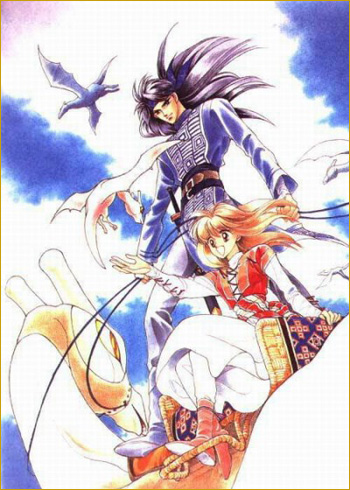

-
Alternative Names: Kanata Kara; From the Other Side; Dunia Mimpi
Author(s):
Genres: Action, Adventure, Comedy, Drama, Fantasy, Romance, Shoujo, Supernatura
Release: 1991
Status: Complete
Type: Manga
Length: 14 Volumes
Read Online @:

More Infor @:

Notes
An everyday regular school girl Noriko getscaught up in a terroriist bombing, but instead of being blown up she gets transported to another world! In this world seers have been waiting for the Awakening that is the key to wake up the Sky Demon, and who controls the Sky Demon will Control the world. So when Noriko shows up she finds out that shes supposedly the Awakening and that everyone wants to control her. A mysterious young man rescues her and helps protect her, but what will Noriko do? How can she get back home?